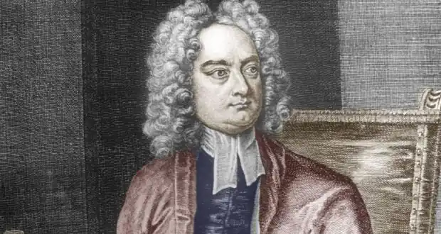

ДЖОНАТАН СВІФТ
(1667-1745)
Англійський сатирик, церковний діяч, публіцист, поет і письменник Джонатан Свіфт народився 30 листопада 1667 року в Дубліні в англійській родині. Батько Свіфта не дожив до народження сина, мати через деякий час назавжди від'їжджає до Англії і Джонатана виховує його дядько, Годвін Свіфт, відомий дублінський адвокат. Свіфт здобув хорошу освіту — спочатку в школі графства Кілкені (1673-1681), потім у дублінському Трініті-коледжі (1682-1688), де йому присудили ступінь бакалавра мистецтв у 1686 році. Вибух насилля, що стався в Ірландії 1689 року, змусив Свіфта шукати притулок в Англії. До кінця того ж року Свіфт став секретарем сера Уільяма Темпла, дипломата у відставці та літератора, який жив у маєтку Мур-Парк, у графстві Суррей. Свіфт залишався на цій посаді до загибелі сера Уільяма в січні 1699 року. Це були чи не найкращі часи в житті Свіфта: він мав можливість досхочу працювати у величезній бібліотеці Темпла; саме тут, у Мур-Парку, починається самостійна поетична діяльність Свіфта; 1692 року йому присуджують ступінь магістра мистецтв в Оксфорді; нарешті, маєток Темпла стає основою сімейного щастя Свіфта (письменник-початківець знайомиться з Естер Джонсон, падчеркою управителя Мур-Парку, яка спочатку була його ученицею, а згодом стала дружиною). У 1695 році Свіфт був висвячений у сан священика англіканської церкви й упродовж наступного року служив у Кілруті, на півночі Ірландії. Опинившись у центрі релігійних чвар, Свіфт починає писати один з відомих сатиричних творів — памфлет "Казка бочки", робота над яким тривала кілька років. "Казка бочки" вийшла у світ 1704 року без вказівки на ім'я автора, зчинивши галас довкола себе. Свіфт зажив слави дотепника, після того як його авторство було розкрито. В образах трьох братів — Петра, Мартина й Джека — автор піддає нищівній критиці три гілки християнства — католицьку, англіканську та пуританську. У 1696 році письменник повертається до Мур-Парку, де пише сатиру "Битва книг". Твір був присвячений дискусії між прибічниками "давніх і нових книг", в якій на боці "давніх" брав участь і Темпл. Свіфт у сатирі виступає проти канонізації античної спадщини, але за його творче використання (передусім для подальшого розвитку сучасної англійської літератури). Після смерті Темпла 1699 року Свіфт переїздить до Ірландії, де отримує церковний прихід у Ларакорі. У 1702 році у дублінському Трініті-коледжі він здобуває ступінь доктора богослів'я. Його літературна популярність стала ще більшою після виходу серії нарисів "Папери Бікерстафа" (1708 — 1709), в яких він висміював якогось Джона Патріджа, що складав щорічний астрологічний альманах. Образ екстравагантного джентльмена Ісака Бікерстафа настільки припав до душі читачам, що близький до вігів есеїст Річард Стіл почав видавати від імені Бікерстафа повчально-сатиричний журнал "Бовтун" (1709). Свіфт співпрацював у цьому журналі, виступав і як прозаїк, і як поет. Через деякий час Свіфт, уже відомий політичний письменник, відходить від вігів і зближується з членами торійського кабінету, навіть кілька місяців (1710 — 1711) видає торійський журнал "Екзамінер". З вересня 1710 по червень 1713 року Свіфт перебуває в Лондоні. У цей час і розгорнулась його діяльність як торійського публіциста. У сфері літературних зв'язків найбільше значення мав невеликий гурток "Клуб Мартіна Скліблеруса (Писаки)". Докладні відомості про політичні й літературні події Лондона того часу дійшли до нас у листах Свіфта, які після його загибелі дістали назву "Щоденник для Стелли" й були адресовані другу всього його життя — Естер Джонсон. На захист торі й велику підтримку уряду у своїх статтях та памфлетах у 1713 році Свіфт обійняв посаду декана в дублінському соборі св. Патріка. Він залишає Лондон і повертається до Ірландії. Третій період творчості Свіфта відкривається памфлетом "Пропозиція про загальне використання ірландської мануфактури" (1720), одразу після якого вийшов ряд інших памфлетів про Ірландію. На початку XVIII століття населення Ірландії було неоднорідним. Свіфт виступив на захист англо-ірландців, але цим самим він порушив питання про тяжкий стан всієї Ірландії. Центральне місце в ірландській публіцистиці Свіфта належить "Листам Суконщика" (1724). Твір був спрямований проти патенту, який було видано британським урядом англійському купцю Вуду на право чеканити дрібну (і неповноцінну) монету в Ірландії. До патенту Вуда в Ірландії поставилися негативно, керуючись мотивами політичного та економічного характеру. Ірландський парламент та його виконавчі органи вжили проти монети Вуда ряд заходів, які вимагали підтримку бойкотом ірландців. "Листи Суконщика" допомагали цьому бойкотові й примусили лондонський уряд відмінити патент Вуда. Свіфт став національним героєм. Головною книгою життя Дж. Свіфта стають "Мандри до різних країн світу Лемюеля Гулівера" (1721 —1725), що були видані в Лондоні в 1726 році. Останнє десятиліття творчої діяльності великого сатирика, було після виходу "Мандрів до різних країн світу Лемюеля Гулівера" (1726-1737) позначено великою активністю. Свіфт пише багато різних публіцистичних та сатиричних творів, серед яких не останнє місце належить памфлетам на ірландську тему. Виступи Свіфта на захист Ірландії, як і раніше, знаходять відгук у серцях людей і їх підтримку. Його обирають почесним громадянином Дубліна (1729). У цей період Свіфт пише багато поезій. Його вірші позначені тематичною різноманітністю. Провідним жанром віршів є політична сатира, як правило, пов'язана з Ірландією ("Клуб Легіон", 1736). Підсумок своєї творчої діяльності Свіфт підводить в одному з найбільш значущих своїх поетичних творів — "Віршах на смерть доктора Свіфта" (1731, видані 1738). Свіфт помер 19 жовтня 1745 року в Дубліні. На його могилі вирізьблена складена ним епітафія: "Тут покоїться тіло Джонатана Свіфта, доктора богослов'я, декана цього кафедрального собору, жорстоке обурення не може більше терзати його серце. Проходь, подорожній, і наслідуй, якщо зможеш, сміливому захиснику свободи". "Мандри Гулівера" (1721 —1725) За жанром "Мандри Гулівера" — це сатиричний філософсько-політичний роман, що посідає вагоме місце в розвитку мистецтва доби Просвітництва. Своєрідність жанрової природи твору полягає в поєднанні романної та памфлетної форм, що підкреслює специфічну особливість свіфтовського роману — виразно відчутні публіцистичні засади. Головною темою "Мандрів" є мінливість зовнішнього вигляду світу природи та людини, зображена у вигляді фантастичного та казкового середовища, до якого потрапляє Гулівер під час своїх мандрів. Роман складається з чотирьох частин, у кожній з яких розповідається про перебування героя в тій чи іншій країні (у ліліпутів, велетнів, у Лапуті, у країні гуінгмів). Твір має яскраво виражені риси роману-подорожі пригодницько-фантастичного характеру. Це приваблює перш за все дітей. Вводячи казкові та фантастичні мотиви в їх особливій художній функції, Свіфт не обмежується нею, розширює її значущість за допомогою пародії, на основі якої будується сатиричний гротеск. Текст "Мандрів" пронизаний алюзіями, ремінісценціями, натяками, прихованими й явними цитатами. Зображуючи Ліліпутію, Свіфт висміює все те, що його не задовольняє в сучасній Англії. Закони, звичаї, устрій Ліліпутії — це гігантська карикатура на монархічну Британію. Країна велетнів Бробдингнег змальовується автором як ідеальна монархія, яка протистоїть недосконалій Англії, а її король — як мудрий правитель, який засуджує війни й у своїх діях користується принципами вищої моралі. Подорож Гулівера до Лапути з відвідуванням Великої Академії — це в'їдлива сатира письменника на псевдонауку його часів з її відірваністю від реального життя. Заключна частина роману знайомить читача з останньою мандрівкою Гулівера — до країни з розумними кіньми й здичавілими представниками людства — йеху. Все це результат глибокого розчарування автора в можливостях позитивного розвитку людського суспільства. Подвійна художня функція фантастики — наочність та гротескна пародія — опрацьовується Свіфтом у руслі античної і гуманістичної традиції. У співвідношенні з цією традицією мотиви групуються навколо схеми вигаданої мандрівки. Щодо Гулівера, то надана схема спирається також на англійську прозу XVII століття, в якій широко показані розповіді мандрівників епохи великих географічних відкриттів. З описів морських подорожей XVII століття Свіфт запозичує мандрівний колорит, який дає фантастиці ілюзію зримої реальності. Ця ілюзія збільшується ще й завдяки тому, що в зовнішньому вигляді між ліліпутами та велетнями, з одного боку, і самим Гулівером та його світом — з другого, існує співвідношення величин. Кількісні співвідношення підтримуються якісними різностями, які встановлює Свіфт між розумовим і моральним рівнем Гулівера, його свідомістю і відповідно свідомістю ліліпутів, бробдингнежців, йеху, гуігнгнмів. Кут зору, під яким Гулівер бачить чергову країну своїх мандрів, заздалегідь точно встановлений; він визначається тим, наскільки її мешканці більші чи менші за Гулівера в розумовому та моральному відношенні. Ілюзія правдоподібності, яка охоплює гротескний світ "Мандрів", з одного боку, наближує його до читача, з другого — маскує памфлетну основу твору. Казкова фабула разом з правдоподібним пригодницьким колоритом морської мандрівки становить конструктивну основу "Мандрів". Сюди можна включити й автобіографічний елемент — сімейні розповіді та особисті враження Свіфта про незвичайну пригоду його раннього дитинства. Предметом сатиричного зображення в "Мандрах" є історія. Свіфт прилучає до неї читача на прикладі сучасної для нього Англії. Перша й третя частини сповнені натяків, і сатира в них має більш конкретний характер, ніж у двох інших частинах. У "Мандрах до Ліліпуті!" натяки органічно вплетені до розгортання подій. Історична алюзія у Свіфта не відмінюється хронологічною послідовністю, вона може належати до окремої особи й вказувати на малі біографічні подробиці. Так, наприклад, у другій частині опис минулих смут в Бробдингнезі має на увазі соціальне потрясіння XVII століття; в третій частині, яка розпадається на окремі епізоди, метою сатири є не тільки вади англійського політичного життя, але й безмірні претензії експериментально-математичного природознавства.